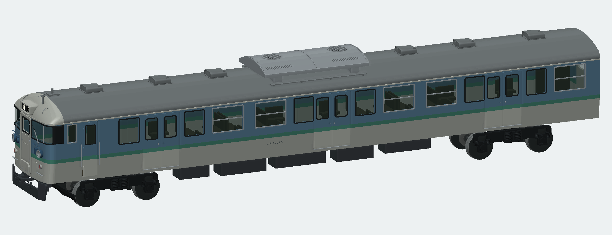
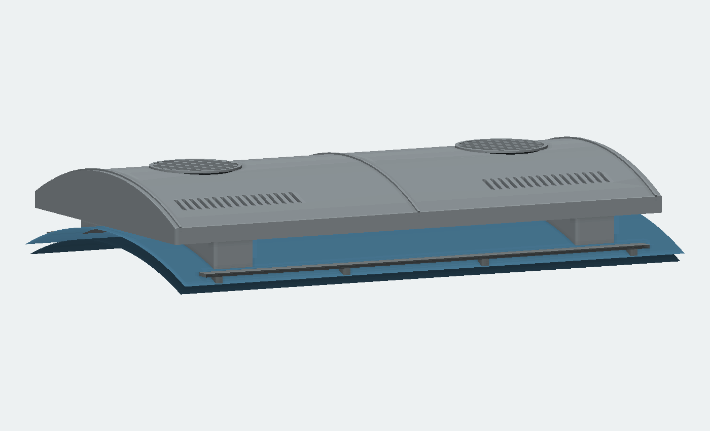
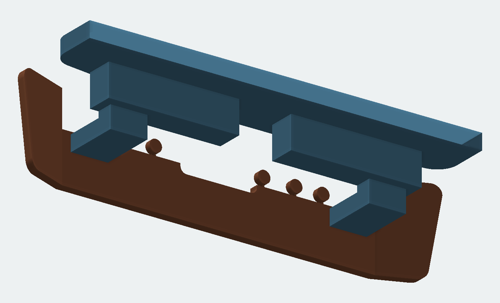
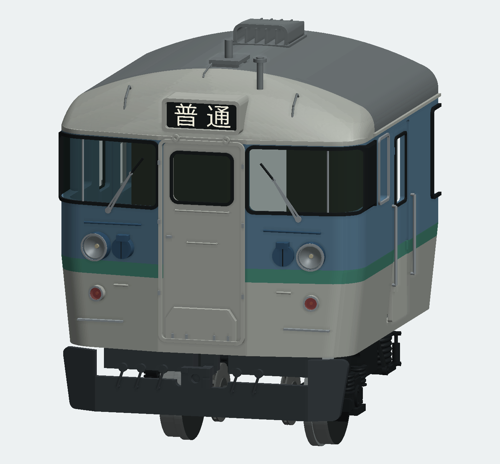
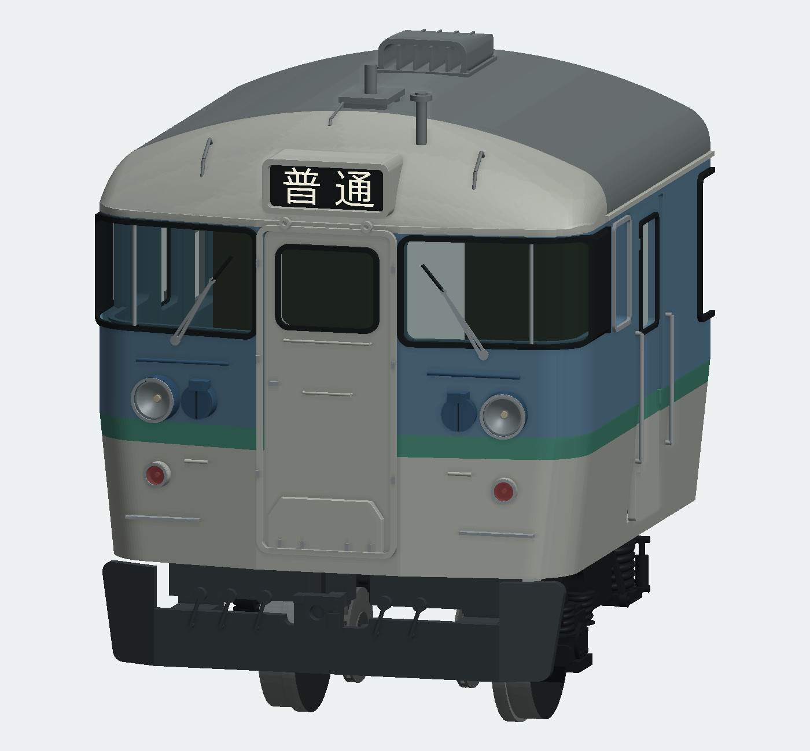
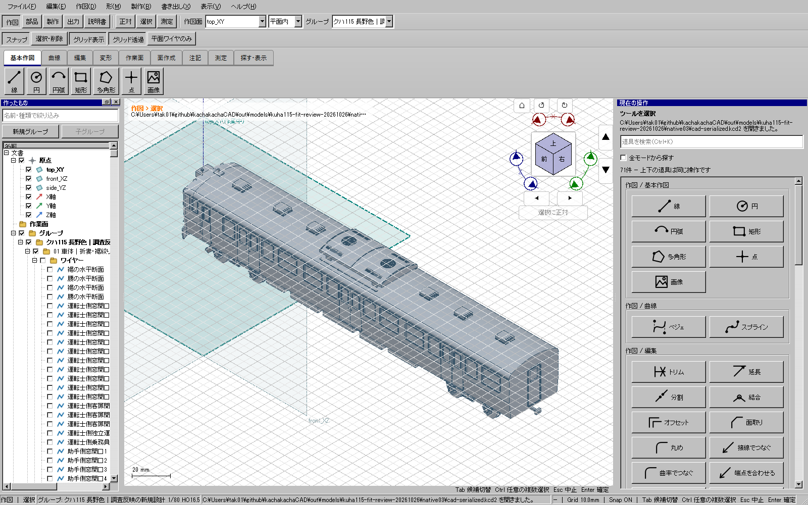

前版の外観を保ち、離れていた取付面と接着代を修正しました。通常版233部品／前後分割版240部品。局所寸法は写真に基づく模型設計値で、実車の完全な実測復元ではありません。
通常版CADを開く ／ 前後分割版CAD ／ 組立と制限 ／ 取付の検査記録

以前にも奥まった4本の脚はありましたが、側面から浮いて見えました。2本の横断サドルをキセへ一体化し、実際の屋根曲面で底を切っています。前後・左右の4領域で接触面積を検査しました。

形を見分けるため、屋根を青くした実CAD形状の部分表示です。実車写真やAI予想図ではありません。
床板下面から左右の立上りと水平腕を一体で伸ばしました。スカート裏面には各3.9 mm²の接着面が接します。中央の連結器位置を避けています。

青が床板と一体の支持腕、茶がスカート。前端だけを切り出した表示です。
側窓・客扉・乗務員扉・貫通扉・後妻扉のガラスを相手の裏面に合わせました。パノラミックガラスは外面を車体より0.22 mm内側に保ち、裏側の曲面受けで支えます。窓の視界を塞がず、Hゴムも対応面へ接触させています。


各版で93か所の接触を検査しました。距離だけでなく、元の境界面同士に十分な共通面積があることを確認しています。領域で切った人工面を接触面積には数えません。
| 取付箇所 | 距離 mm | 接触面積 mm² |
|---|---|---|
| 冷房サドルの前後左右支持 | 6.21725e-15 | 20.4362 |
| 冷房サドルの前後左右支持 | 2.16286e-14 | 20.4362 |
| 冷房サドルの前後左右支持 | 6.21725e-15 | 20.4362 |
| 冷房サドルの前後左右支持 | 2.16286e-14 | 20.4362 |
| スカート左右の床板接着腕 | 5.55112e-17 | 3.9000 |
| スカート左右の床板接着腕 | 5.55112e-17 | 3.9000 |
スカートを0.5 mm、ガラスを0.2 mm、屋根を0.5 mm離す3つの負の試験は、すべて不合格になりました。通常版・分割版の全閉ソリッド、有効BRep、正体積、全STEP再読込、全STL閉鎖性・面向き、各476点、全対候補の干渉、分割6組の再組立、保存・再読込も検査しました。

通常のWindowsイベントループで表示を確認した画面です。全モデリング工程をOSのマウスで作り直した証拠ではありません。
実印刷、接着強度、走行、旋回する台車の動的干渉、市販動力との互換は未試験です。以前のモデル・ユーザーの原本・旧配布は削除していません。